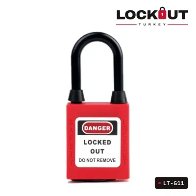
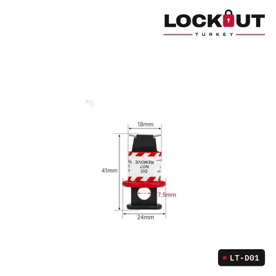
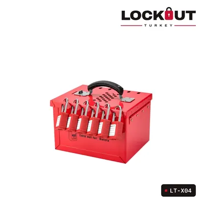
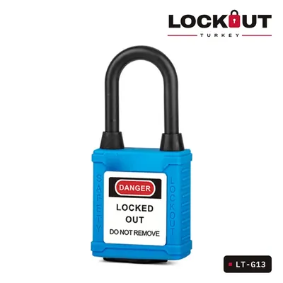

Güvenli çalışma notları
Ürün seçimi, prosedür ve saha uygulamaları hakkında kısa ve uygulanabilir yazılar.

Emniyet asma kilidi nasıl seçilir? Çene malzemesi, boy ve anahtar sistemi
Çelik mi plastik çene mi, 38 mm mi 76 mm mi, farklı anahtar mı master anahtar mı? Kişisel LOTO kilidini seçerken bakılacak dört nokta.
Devamını oku →
Minyatür devre kesici kilitleri: POS, PIS, POW ve TBLO farkı
Sigortalar için kilit seçerken karşılaşılan POS, PIS, POW ve TBLO kısaltmaları ne anlama geliyor, hangi sigortaya hangisi uyar?
Devamını oku →
Grup kilitleme nasıl yapılır? Grup kilit kutusuyla adım adım
Çok kişinin çok noktada çalıştığı bakımlarda her çalışanın her noktaya kilit takması pratik değildir. Grup kilit kutusu bu işi nasıl kolaylaştırır?
Devamını oku →
Vana kilitleme: küresel, kelebek ve sürgülü vanalar için doğru ekipman
Vananın tipine, kol ya da volan ölçüsüne göre hangi kilit kullanılır? Standart kilidin uymadığı vanalarda ne yapılır?
Devamını oku →
Renk kodlu kilitlerle LOTO yönetimi
Kilit renkleri sahada kimin çalıştığını bir bakışta gösterir. Renk planı nasıl kurulur, nelere dikkat edilir?
Devamını oku →
LOTO istasyonu nereye kurulur, içinde neler olmalı?
Kilitleme ekipmanı kullanılacağı yere yakın, düzenli ve eksiksiz durmalı. İstasyonun yeri ve içeriği için pratik öneriler.
Devamını oku →Tesisiniz için toplu teklif mi lazım?
Ürünleri teklif sepetine ekleyin ya da ihtiyacınızı WhatsApp’tan yazın; size özel teklifle dönelim.